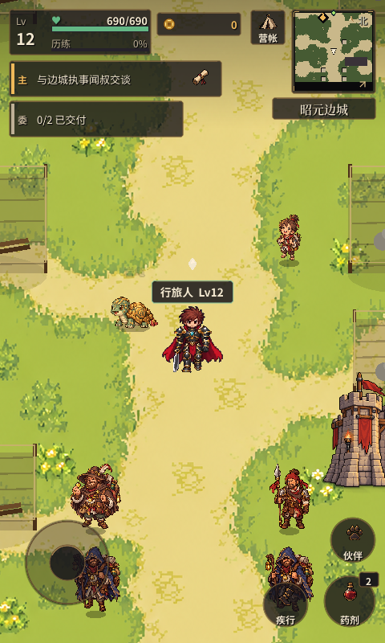
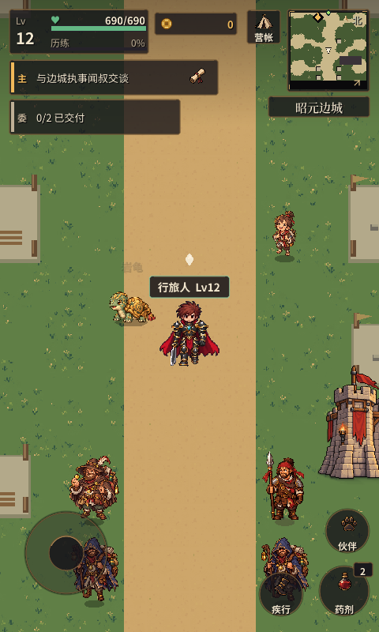
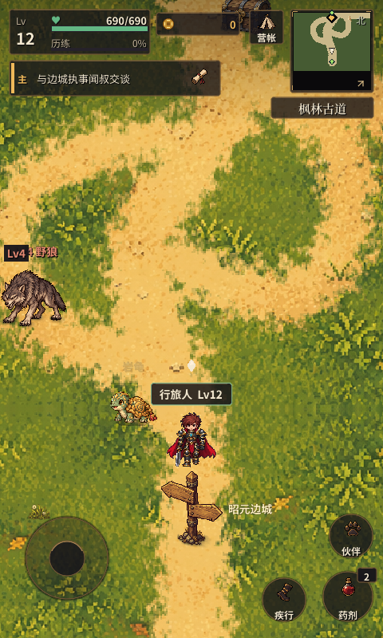
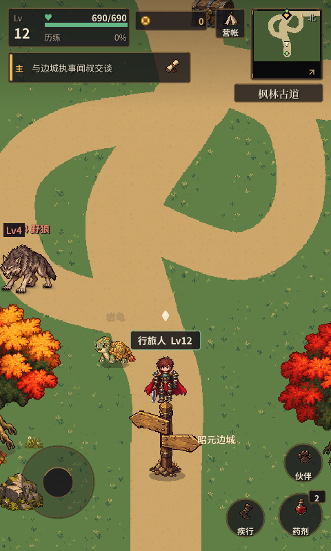
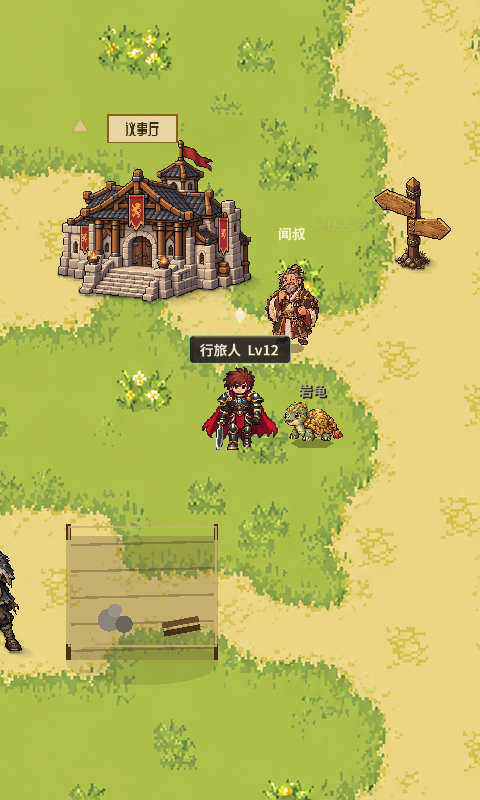
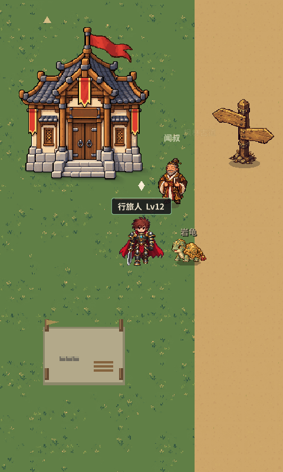

晴野行旅 · 六组样板对照
先看3组前后图；其他视角按需查看。建筑同框图隐藏HUD，已明确标注为调试视图。
城镇正常HUD
修改前 · 原生运行
样板 · 原生运行
野外正常HUD
修改前 · 原生运行
样板 · 原生运行
建筑与NPC同框 · 隐藏HUD调试图
修改前 · 原生运行
样板 · 原生运行
长屏与补充视角
after_lorin_wilds_sample_800 after_lorin_wilds_spawn_1067 after_maple_road_sample_800 after_maple_road_spawn_1067 before_lorin_wilds_sample_800 before_lorin_wilds_spawn_1067 before_maple_road_sample_800 before_maple_road_spawn_1067 Cloud验收提示词 制作与检查说明